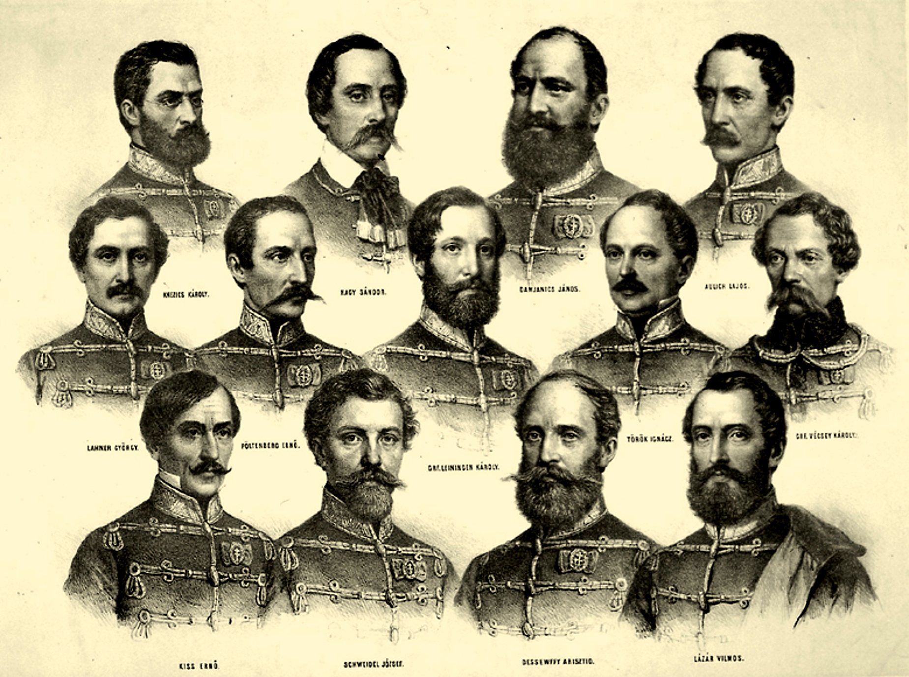
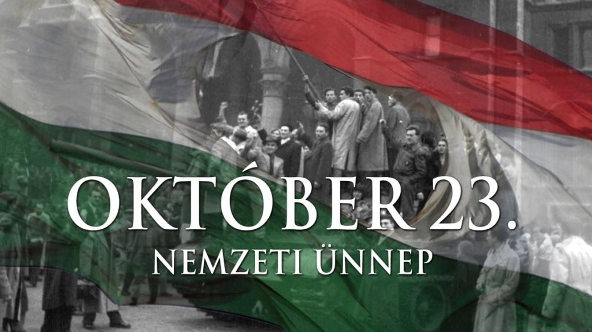
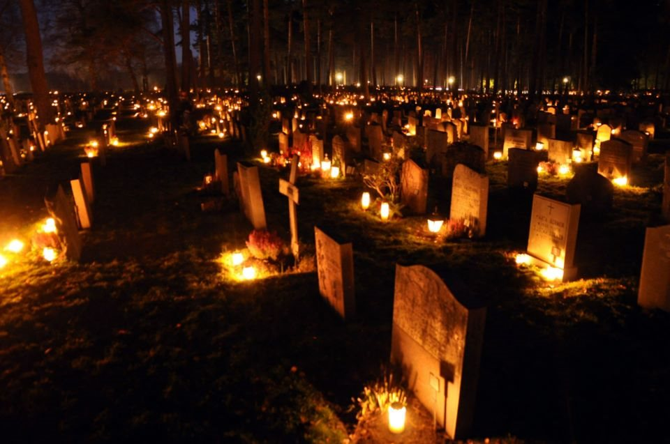

Az ősz a mérsékelt öv egyik évszaka. Trópusi, illetve száraz és hideg égövi tájakon nem létezik.
A Föld északi féltekéjén szeptember, október és november, míg a Föld déli féltekéjén március, április és május az ősz hónapjai. Az ősz a nyár és a tél között helyezkedik el, fő jellemzője a napok rövidülése, a hőmérséklet csökkenése és a lombhullató fák lombjának zöldről sárgává-pirossá színeződése majd lehullása.

Az ősz kezdetének (mint a többi évszaknak) az északi féltekén három időpontja van:
a naptári ősz szeptember elsején kezdődik, az ősz hónapjainak (szeptember, október, november) figyelembe vétele miatt. A naptári ősz 91 napig tart, szeptember 1-től november 30-ig.
a meteorológiai ősz a lombhullató növények leveleinek elsárgulásával és az idő lehűlésével kezdődik,
a csillagászati ősz kezdete az őszi napéjegyenlőség napja: szeptember 23. A csillagászati ősz ettől a naptól december 22-éig tart. Ezen a szeptemberi napon a napsugarak az Egyenlítőn delelnek 90 fokos szögben. A nappalok és az éjszakák hossza az egész Földön egyforma. Utána a nappalok tovább rövidülnek az északi félgömbön egészen a téli napfordulóig. Vége az Északi-sarkon tartó állandó nappalnak, jön a féléves éjszaka; míg a Déli-sarkon a féléves éjszaka után következik a féléves nappal.
Ősszel a nappalok rövidülnek és az időjárás fokozatosan fordul egyre hidegebbre, szelesebbre és csapadékosabbra. A lombhullató növények levelei elsárgulnak, elvörösödnek, átmenetileg gyönyörű színpompába borítva a természetet, mielőtt elszáradnának és lehullanának a fákról. Néhány későn érő növény még meghozza gyümölcseit.
Az ősz különösen csapadékos évszak. Magyarországon 2013-ig az egy nap alatt leesett legtöbb csapadékot Gyömrőn mérték 1963. szeptember 8-án, 203 mm-t. Ősszel csökken a napsütéses órák száma, Magyarországon 2013-ig a leghosszabb, napsütés nélküli időszakot Szegeden regisztrálták 1978. október 31. és december 4. között, 35 napot.
Az ősz fő, hagyományokon alapuló ünnepei többnyire az elmúláshoz, halálhoz kapcsolódnak. Ilyen az angolszász országokban nagy hagyományokkal rendelkező (de újabban más kultúrájú népekhez is átszivárgó) Halloween, melyet október 31-én este tartanak meg. Másnap, november 1-jén Mindenszentek, a következő napon, november 2-án Halottak napját tartanak több országban. Az ősz, főként a költészetben, a melankóliával áll asszociatív viszonyban. A szép nyári napok elmúltak, a tél hidege már érződik, az égbolt elszürkül, egyre rövidebbek a nappalok, sok ember magába fordul. Az ősz továbbá forradalmi események és tragédiák megemlékezésének időpontja is országunkban.
|  |  |  | Ősszel, mint más évszakokban különböző országok saját történelmük szerinti politikai ünnepnapokat is tartanak, így Magyarországon Október 6-a az Aradi vértanúk emléknapja, nemzeti gyásznap; míg október 23-a nemzeti ünnep, melyen az 1956-os forradalom emlékére. | Október 23. óta ez a jeles nap kettős nemzeti ünnep Magyarországon: az 1956-os forradalom kitörésének napja és a Magyar Köztársaság 1989-es kikiáltásának napja, melyet az 1990. évi XXVIII. törvény iktatott a nemzeti ünnepek sorába. | A mindenszentek vagy mindenszentek napja a keresztények ünnepe, az üdvözült lelkek emléknapja, melyet a katolikus keresztény világ november 1-jén tart. |

A halloween ősi kelta hagyományokból kialakult autentikus ír ünnep Október 31. éjszakáján, melyet elsősorban az angolszász országokban tartanak
A szeptemberi nap-éj egyenlőség napja szeptember 22., illetve szeptember 23. Jellemzően 23-ára esik, csak szökőévekben, illetve közvetlenül 1 évvel utána fordul elő 22-én, illetve a nyugatabbra található időzónákban – ritkán – 21-én este köszönt be a csillagászati ősz.
A Márton-napi, November 11-ei népszokások egyrészt az év végéhez, a mezőgazdasági munkák befejeződéséhez, illetve az advent közeledtéhez kötődnek, másrészt ahhoz a legendához, amely szerint Szent Márton egy libaólban próbált elrejtőzni, amikor püspökké akarták megválasztani, de a ludak elárulták gágogásukkal.
| Költő | Költemény | |
|---|---|---|
| Ady Endre | Az ősz dicsérete | 1914 |
| Weöres Sándor | Galagonya | 1938 |
| József Attila | Őszi alkonyat | 1922 |
| Petőfi Sándor | Itt van az ősz, itt van újra | 1848 |